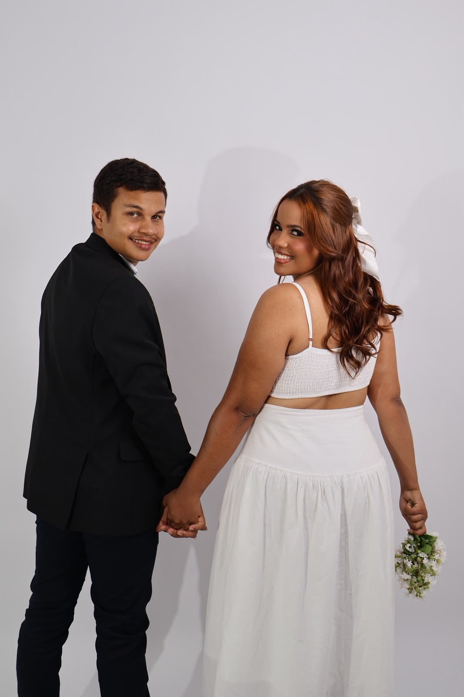
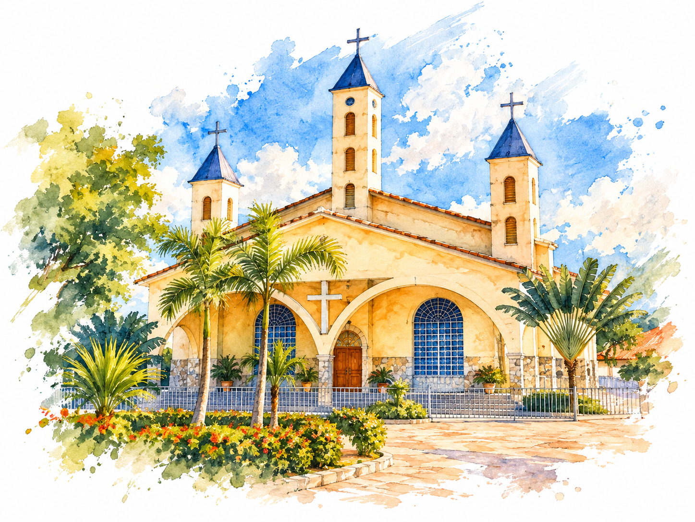
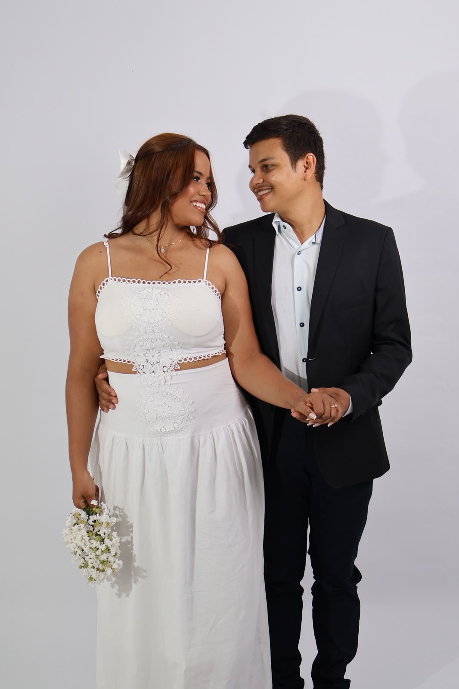

COM A BÊNÇÃO DE DEUS
O início da nossa
história
“Acima de tudo, porém, revistam-se do amor,
que é o elo perfeito.”
Com alegria, queremos compartilhar este dia com você
I & L
✦
Diante das bênçãos de Deus, teremos a alegria de unir nossas vidas e convidar você para este momento.
Dois caminhos, uma só história.
VAMOS CELEBRAR O AMOR
23JANEIRO • 2027
SÁBADO · ÀS 16H40

Que a vida nos reserve muitos capítulos assim.

A CERIMÔNIA
Igreja Matriz
O primeiro capítulo de uma vida inteira juntos.
⌖ LOCALIZAÇÃO DA IGREJA MATRIZ ↗Um dia para guardar no coração.
❧
celebrar ❧
DEPOIS DA CERIMÔNIA
Mix Clube
Vamos brindar, sorrir e criar lembranças para sempre.
⌖ LOCALIZAÇÃO DA RECEPÇÃO ↗A CONTAGEM REGRESSIVA JÁ COMEÇOU
Falta pouco para o nosso sim
---
DIAS
:
--
HORAS
:
--
MINUTOS
:
--
SEGUNDOS

E queremos você perto para celebrar o nosso sim.
SUA PRESENÇA É MUITO ESPECIAL
Esperamos você!
Confirme sua presença pelo WhatsApp.
♡ CONFIRMAR PRESENÇA PELO WHATSAPP